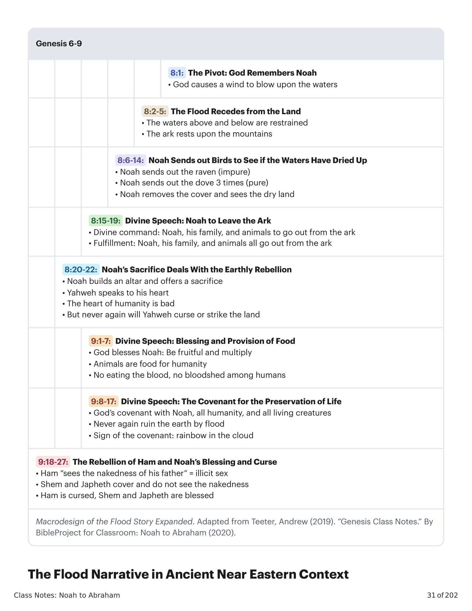

A arca de Noé é descrita com dimensões precisas e uma estrutura que imita um templo sagrado. Ela carrega dentro de si um microcosmo da criação: pares de animais, a família humana, e a promessa de renovação. Quando as águas recuam, a arca repousa sobre os montes, e Noé envia aves para sondar a nova realidade.Noah’s ark is described with precise dimensions and a structure that imitates a sacred temple. It carries within it a microcosm of creation: pairs of animals, the human family, and the promise of renewal. When the waters recede, the ark rests upon the mountains, and Noah sends birds to probe the new reality.

Em 1847, Austen Henry Layard descobriu perto de Mosul a primeira de milhares de tabuletas cuneiformes que pertenciam à biblioteca de Ashurbanipal (Rei da Assíria, século VII a.C.).In 1847, Austin Henry Layard discovered near Mosul the first of thousands of cuneiform tablets that belonged to the library of Ashurbanipal (King of Assyria, 7th century B.C.E.).
Em 1872, George Smith apresentou seu trabalho cuidadoso de reunir muitas tabuletas chamadas a Epopeia de Gilgamés (“A Conta Caldeia do Dilúvio”).In 1872, George Smith presented his careful work of bringing together many tablets called the Epic of Gilgamesh ("The Chaldean Account of the Deluge").
— Smith, George (1873). The Chaldean Account of the Deluge (2). Transactions of the Society of Biblical Archaeology. 213-34.
A Criação e Caos no Início e no Fim, de Hermann Gunkel, reivindicou que Gênesis 1-11 exibia dependência extensiva das tradições babilônicas.Hermann Gunkel’s Creation and Chaos in the Beginning and the End claimed that Genesis 1-11 displayed extensive dependence upon Babylonian traditions.
No século XX, versões mais antigas dessa história mesopotâmica do dilúvio foram descobertas, totalizando cinco versões separadas em quatro idiomas.In the 20th century, older versions of this Mesopotamian flood story were discovered, bringing it to a total of five separate versions in four languages.
Essas versões são todas descendentes de um ancestral comum, pois compartilham uma lista única de semelhanças em detalhes.These versions are all descendants of a common ancestor, as they share a unique list of similarities in detail.
— Tsumura, David Toshio (1994). “Genesis and Ancient Near Eastern Stories of Creation and Flood.” I Studied Inscriptions from Before the Flood: Ancient Near Eastern, Literary, and Linguistic Approaches to Genesis 1-11. Eisenbrauns. 54-55.
| Motivo NarrativoNarrative Motif | História do Dilúvio em GênesisGenesis Flood Story | Epopeia de Gilgamés, Tabuleta 11Gilgamesh Epic, Tablet 11 | |
|---|---|---|---|
| Decisão divina de destruir a humanidadeDivine decision to destroy humanity | Gn 6:6Gen. 6:6 | Linhas 14-19Lines 14-19 | |
| Aviso ao herói do dilúvioWarning to the flood hero | Gn 6:13Gen. 6:13 | Linhas 20-23Lines 20-23 | |
| Ordem divina de construir uma arca, com dimensões dadasDivine command to build an ark with dimensions given | Gn 6:14-21Gen. 6:14-21 | Linhas 24-31Lines 24-31 | |
| O herói cumpre a ordemHero complies with the command | Gn 6:22Gen. 6:22 | Linhas 32-85Lines 32-85 | |
| Ordem para entrar na arcaCommand to board the ark | Gn 7:1-4Gen. 7:1-4 | Linhas 86-88Lines 86-88 | |
| O herói entra na arca com a família e os animaisHero boards the ark with family and animals | Gn 7:5-16Gen. 7:5-16 | Linhas 89-93Lines 89-93 | |
| Fechamento da porta da arcaClosing of the door of the ark | Gn 7:16Gen. 7:16 | Linha 93Line 93 | |
| Descrição do dilúvioDescription of the flood | Gn 7:17-24Gen. 7:17-24 | Linhas 96-128Lines 96-128 | |
| Destruição da vidaDestruction of life | Gn 7:21-23Gen. 7:21-23 | Linha 133Line 133 | |
| Conclusão da tempestadeConclusion of the storm | Gn 8:1-3Gen. 8:1-3 | Linhas 129-131Lines 129-131 | |
| A arca encalha em uma montanhaArk runs aground on a mountain | Gn 8:4Gen. 8:4 | Linhas 140-144Lines 140-144 | |
| Semelhanças entre Gênesis e a Tabuleta 11 da Epopeia de Gilgamés. Adaptado de Wenham, Gordon (1978). “The Coherence of the Flood Narrative.” Vetus Testamentum, vol. 28 (julho), 346-347.Similarities Between Genesis and Tablet 11 of the Gilgamesh Epic. Adapted from Wenham, Gordon (1978). “The Coherence of the Flood Narrative.” Vetus Testamentum, Volume 28 (July), 346-347. | |||
— Adaptado de Wenham, Gordon (1978). “The Coherence of the Flood Narrative.” Vetus Testamentum, Volume 28 (July). 346-347.
Enquanto a narrativa bíblica compartilha muitos elementos com as histórias mesopotâmicas, há diferenças marcantes que apontam para uma visão teológica distinta.While the biblical narrative shares many elements with Mesopotamian stories, there are striking differences that point to a distinct theological vision.
| Motivo NarrativoNarrative Motif | História do Dilúvio em GênesisGenesis Flood Story | Epopeia de Gilgamés, Tabuleta 11Gilgamesh Epic, Tablet 11 | |
|---|---|---|---|
| O herói abre uma janelaHero opens a window | Gn 8:6Gen. 8:6 | Linha 135Line 135 | |
| Envio da pomba e do corvoSending out of the dove and raven | Gn 8:6-12Gen. 8:6-12 | Linhas 145-154Lines 145-154 | |
| O herói sai da arcaHero exits the ark | Gn 8:15-19Gen. 8:15-19 | Linha 155Line 155 | |
| O herói oferece um sacrifícioHero offers a sacrifice | Gn 8:20Gen. 8:20 | Linhas 155-158Lines 155-158 | |
| A divindade sente o cheiro do sacrifícioDeity smells sacrifice | Gn 8:21-22Gen. 8:21-22 | Linhas 159-161Lines 159-161 | |
| A divindade abençoa o herói do dilúvioDeity blesses flood hero | Gn 9:1-3Gen. 9:1-3 | Linhas 189-196Lines 189-196 | |
| Adaptado de Wenham, Gordon (1978). “The Coherence of the Flood Narrative.” Vetus Testamentum, vol. 28 (julho), 346-347.Adapted from Wenham, Gordon (1978). “The Coherence of the Flood Narrative.” Vetus Testamentum, Volume 28 (July), 346-347. | |||
| Histórias Mesopotâmicas do DilúvioMesopotamian Flood Stories | História do Dilúvio em GênesisGenesis Flood Story | |
|---|---|---|
| Os deuses se cansam do barulho e da desordem da humanidade e tomam uma decisão precipitada (da qual alguns deuses se arrependem!) de destruí-la com o dilúvioThe gods grow tired of the noise and disorder of humanity, and make a rash decision (that some gods regret!) to destroy them with the flood | Deus ouve o clamor que resulta da corrupção moral e da violência da humanidade, e vê sua inclinação para arruinar o seu mundoGod hears the outcry that results from humanity’s moral corruption and violence, and sees their inclination to ruin his world | |
| A assembleia dos deuses tenta ocultar dos humanos o plano do dilúvioThe assembly of gods tries to conceal the flood plan from the humans | AusenteAbsent | |
| O deus principal decreta a destruição total da humanidade; apenas um herói é salvo por uma divindade rebelde que secretamente o informa sobre a ameaça iminente Gênesis de Eridu: Ziusudra Atrahasis: Atrahasis Epopeia de Gilgamés: Uta-napishtiThe chief god decrees total human destruction; only one hero is saved by a rebel deity who secretly informs him about the coming threat Eridu Genesis: Ziusudra Atrahasis: Atrahasis Gilgamesh Epic: Uta-napishti | Deus vê Noé como o único humano fiel e toma a iniciativa de avisá-lo e instruí-lo para sua segurançaGod views Noah as the only faithful human and initiates in warning him and instructing for his safety | |
| A duração do dilúvio é de 7 dias (Atrahasis, babilônico) ou de 6 dias e noites (Epopeia de Gilgamés).The duration of the flood is either 7 days (Atrahasis, Babylonian) or 6 days and nights (Gilgamesh Epic). | Deus oferece 7 dias de aviso, seguidos de 40 dias de tempestade, seguidos de 150 dias de recuo das águas, seguidos de múltiplos estágios de 7 dias, até que o dilúvio dura mais de 1 ano e 10 dias desde o seu início (Gn 7:11; 8:14).God offers 7 days’ warning, followed by 40 days of storm, followed by 150 days of recession, followed by multiple stages of 7 days until the flood is over 1 year and 10 days from its beginning (Gen. 7:11; 8:14). | |
| O alcance da destruição varia nos relatos: • Atrahasis: a destruição total é ordenada pelos deuses • Gilgamés: todas as pessoas voltam a ser barro, embora os topos das montanhas ainda estejam visíveisThe scope of destruction varies in the accounts: • Atrahasis: total destruction is ordered by the gods • Gilgamesh: all people turn back into clay, though the tops of the mountains are still visible | Todas as altas montanhas foram cobertas (Gn 7:19-20); havia água sobre toda a superfície da terra.All the high mountains were covered (Gen. 7:19-20), there was water over all the surface of the land. | |
| Os ocupantes do barco incluem um piloto e artesãos, e muitos animaisThe inhabitants of the boat include a pilot and craftsmen, and lots of animals | Noé, sua família e pares de animaisNoah and his family and pairs of animals | |
| Os deuses estão famintos após 7 dias sem comida e se aglomeram em torno do sacrifícioThe gods are hungry after 7 days of no food, and swarm around the sacrifice | O sacrifício de Noé é agradável a Deus, mas não para saciar uma fome divina; é antes um ato de gratidãoNoah’s sacrifice is pleasing to God but not to satisfy divine hunger; rather it is an act of thanks | |
| Os deuses estabelecem um “sinal”: uma deusa veste um colar azul brilhante que lembra os deuses de nunca mais trazer o dilúvioThe gods establish a “sign”: a female goddess dons a shiny blue necklace that reminds the gods to never bring the flood again | Deus estabelece um sinal da aliança (o arco-íris) para lembrar os humanos da promessa de Deus: os humanos são obrigados a não derramar sangue (Gn 9:4-6)God establishes a sign of the covenant (rainbow) to remind humans of God’s promise: the humans are obligated to not shed blood (Gen. 9:4-6) | |
| Ao herói do dilúvio é dada a vida divina e ele se torna um rei semideus (Ziusudra), ou é convidado ao Monte Dilmum, o reino eterno dos deuses (Uta-napishti)The flood hero is given divine life and becomes a demi-god king (Ziusudra), or is invited to Mt. Dilmun, the eternal realm of the gods (Uta-napishti) | Noé recebe a comissão da nova humanidade, mas fracassa imediatamente em seu próprio jardimNoah receives the new-humanity commission, but he immediately fails in his own garden | |
| Principais Diferenças entre as Histórias de Dilúvio. Criado por Tim Mackie para BibleProject Classroom: De Noé a Abraão (2020).Key Differences Between Flood Stories. Created by Tim Mackie for BibleProject Classroom: Noah to Abraham (2020). | ||
De que maneiras a história de Noé ressoa com outras histórias de dilúvio que você já ouviu? O que é único sobre a versão bíblica?In what ways does Noah's story resonate with other flood stories you've heard? What is unique about the biblical version?